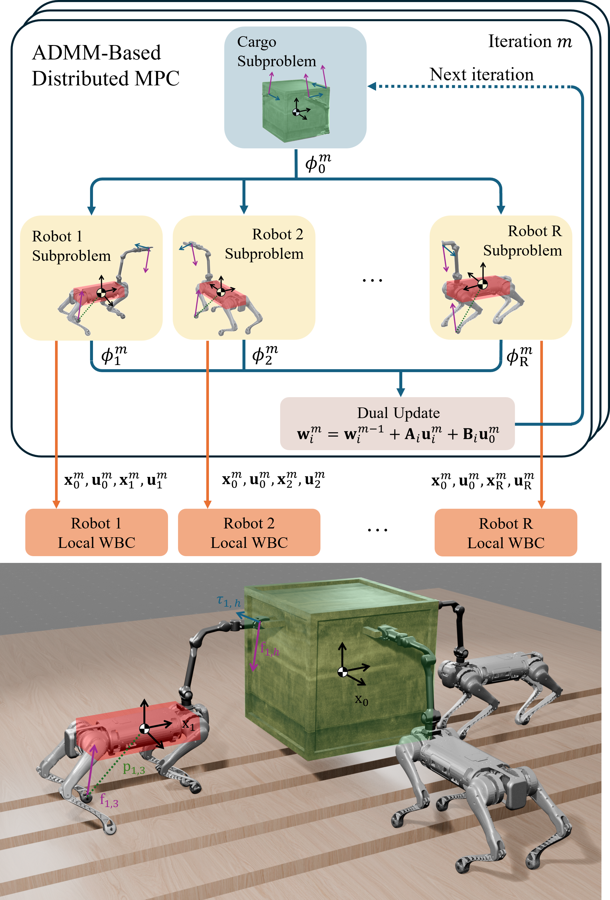
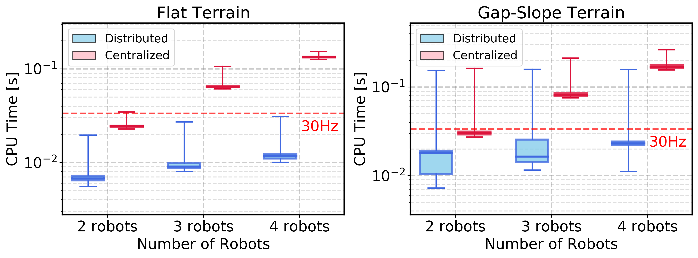
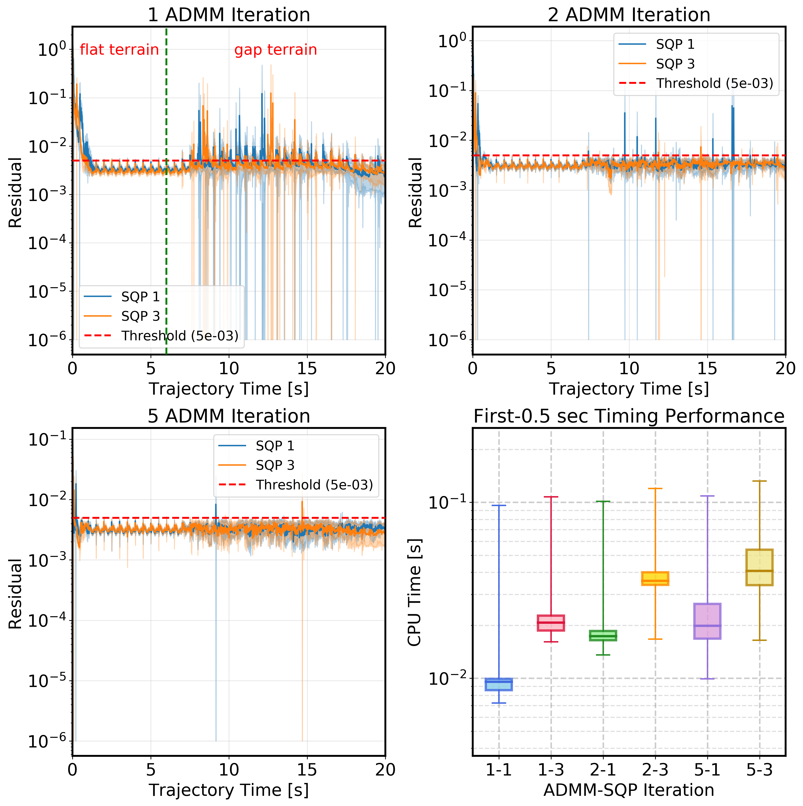
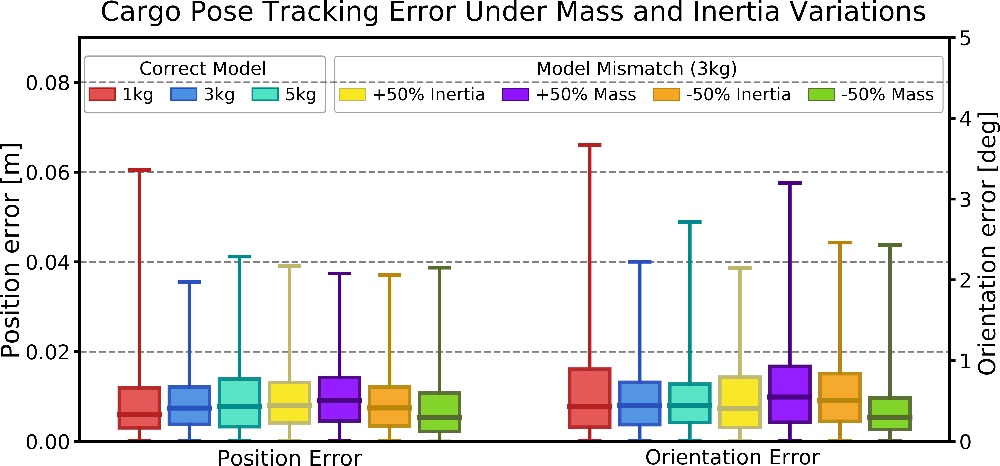
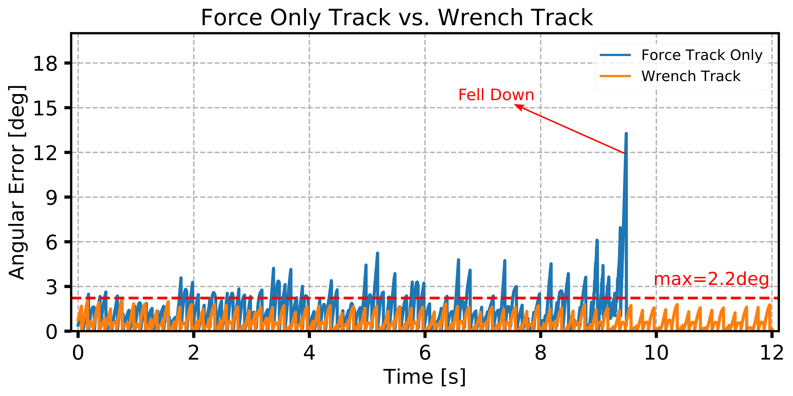

Evaluation scenarios: Gap (A), Slope (B), Narrow Turn (C), Annular (D), 3-robot Gap (E), 4-robot Slope (F), Obstacle avoidance (G).
Abstract
Collaborative transportation of heavy payloads via loco-manipulation is a challenging yet essential capability for legged robots operating in complex, unstructured environments. Centralized planning methods capture dynamic coupling among robots and payloads but scale poorly with system size, limiting real-time applicability. In contrast, hierarchical and fully decentralized approaches often neglect force and dynamic interactions. This study proposes an Alternating Direction Method of Multipliers (ADMM)-based distributed model predictive control framework for collaborative loco-manipulation with a team of quadruped robots with manipulators. By exploiting the payload-induced coupling structure, the global optimal control problem is decomposed into parallel individual-robot-level subproblems with consensus constraints on interaction wrenches. The distributed planner operates in a receding-horizon fashion and achieves fast convergence, requiring only a few ADMM iterations per planning cycle. A wrench-aware whole-body controller executes the planned trajectories, tracking both motion and interaction wrenches. Simulations with up to four robots demonstrate scalability, real-time performance, and robustness to model uncertainty.
Approach Summary

System overview: robot subproblems are solved in parallel with consensus on interaction wrenches; trajectories are executed by local wrench-aware WBC.
We decompose the tightly coupled multi-robot optimal control problem by exploiting the star-shaped coupling induced by the shared payload: each robot interacts directly with the payload rather than with other robots. This allows consensus ADMM to split the problem into a payload subproblem and parallel robot-level subproblems, with consensus constraints only on the manipulation wrenches (force and torque). The payload dynamics use local copies of these wrenches; each robot subproblem uses the payload state from the previous ADMM iteration, keeping subproblems tractable. With warm-starting across MPC windows, only a few ADMM iterations per cycle are needed. A hierarchical wrench-aware whole-body controller then tracks the optimized poses and interaction wrenches at 500 Hz, ensuring force-consistent execution.
Rough Terrain
Gap — Stepped terrain, adaptive swing heights
Slope — 10° incline, base and cargo compensating for tilt
Narrow Turn — 90° turn in narrow passage
Annular — Circular path on elevated platform
Obstacle Avoidance
Collision-free navigation with CBF constraints; MPC finds feasible trajectories through narrow passages.
Two robots with cargo avoiding box obstacles (Gazebo + Blender)
Scalability & Analysis
We highlight three contributions:
Real-time distributed planning that scales with team size
Tight integration of MPC with wrench-aware whole-body control
Robustness under model uncertainty and full wrench tracking
Scalability — Real-time performance independent of team size
Our ADMM decomposition preserves dynamic coupling (consensus on interaction wrenches) while yielding parallel robot-level subproblems. Centralized MPC solves one large OCP that grows with robot count; we validate on flat and Gap–Slope terrain with 2–4 robots.
Three robots — stepped terrain (Gap)
Four robots — sloped terrain

CPU time: distributed vs centralized MPC for 2–4 robots (flat and Gap–Slope). Red dashed line: 30 Hz real-time threshold.
Distributed MPC achieves 3.6×–11.4× speedups on flat terrain (median 6.73–11.63 ms vs 24.38–133.13 ms centralized) and 1.7×–7.3× on Gap–Slope, staying at 50 Hz (100 Hz flat) for all team sizes; centralized drops below 30 Hz for 3–4 robots. The decomposition thus delivers real-time performance without sacrificing coupling-aware planning.
Fast convergence with few ADMM iterations
We use 2 ADMM and 1 SQP iteration per MPC solve. Warm-starting from the previous window lets consensus on wrenches converge quickly; we validate with 60 trials on Gap terrain across waypoints and configurations.

Residual convergence and computation time across ADMM–SQP configurations.
One ADMM iteration leaves residuals unsuppressed in the gap phase; two keep them in tolerance with rare violations; five improve further at higher cost. More SQP iterations also increase solve time. The 2+1 choice balances constraint satisfaction and real-time efficiency—the pipeline does not need many iterations to stay stable.
Obstacle avoidance with integrated MPC–WBC
We add obstacle avoidance via CBFs in the distributed MPC and run the wrench-aware WBC in Gazebo (Blender rendering). The question is whether collision-free plans are accurately tracked while enforcing wrench consistency at the grasps.
Left: collision-free trajectory through obstacles. Right: pose tracking error over a 10 s segment (full task 110 s).
With only start-to-goal reference, MPC finds feasible paths through narrow passages. Max tracking errors are 0.0183 m and 1.644° over a 10 s window; spikes at ground impact stay bounded. The integrated MPC–WBC thus achieves real-time obstacle avoidance with accurate, force-consistent execution.
Robustness to mass and inertia uncertainty
We stress-test with varied nominal cargo mass and deliberate mass/inertia modeling errors (reference: 6.5 m translation + 90° rotation). Explicit wrench optimization and tracking let the WBC compensate in a force-consistent way.

Cargo pose tracking errors under different nominal masses and parameter perturbations.
Median errors stay low across masses and errors; failure appears only near ~67% modeling error. Overestimated mass/inertia improves robustness (larger wrenches, more margin). This underscores the value of explicit wrench computation and tracking versus position-only tracking.
Why full wrench tracking matters — ablation
We optimize and track the full 6-DoF wrench at the grasps. Ablating torque (force-only tracking) tests whether this is necessary.

Force-only vs full wrench tracking: angular error and stability.
Force-only tracking leads to growing angular error and instability. Enabling torque—especially about the robot–cargo alignment axis—restores stability; vertical torque stays tightly constrained to avoid slip. The wrench-aware WBC is thus essential for stable, accurate collaborative transport, not an optional add-on.